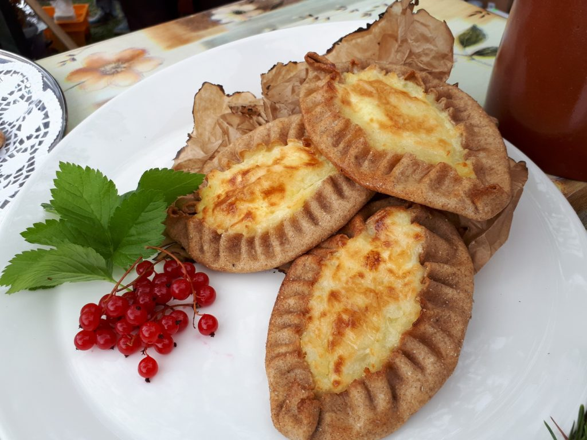

История Карелии
Около восьми тысяч лет до нашей эры территория Карелии освободилась ото льда. В послеледниковое время здесь стали появляться первые поселенцы, об их жизни рассказывают древние наскальные рисунки — петроглифы.
Древнейшие обитатели края занимались охотой, рыболовством и собирательством, освоили производство железа и металлических орудий труда, начали заниматься земледелием и животноводством.
Практически всю территорию современной Карелии в то время занимало племя «лопь» (самоназвание – “саами”), между Ладожским и Онежским озерами расположилось племя «весь» (вепсы), а к западу и северу от Ладожского озера жили «корела» (современное название – “карелы”).
Культура
Республика Карелия является одним из самых культурно насыщенных ареалов Российской Федерации. На сегодняшний день в Карелии находится свыше 4500 культурных объектов и действует около 60 общественных объединений. Большинство театров, музеев, библиотек и прочих объектов культурного наследия сосредоточено в столице республике, в городе Петрозаводске.
Кухня
Карельская кухня — национальная кухня карельского народа. Распространена в местах расселения и проживания карел: Восточной Финляндии, Республике Карелия, Тверской и Архангельской Карелии. Близка к кухне вепсов, ижор и отчасти коми-ижемцев Кольского полуострова.
Туризм
Карелия является уникальным местом, которому удалось сохранить свою первобытную красоту до наших дней в почти первозданном виде. И сегодня здесь находятся самые чистые реки Европы, самые густые леса и прозрачнейшие озера. Недаром проводить свой отдых в Карелии особенно любят те, кто на протяжении года вынужден жить среди каменных джунглей.